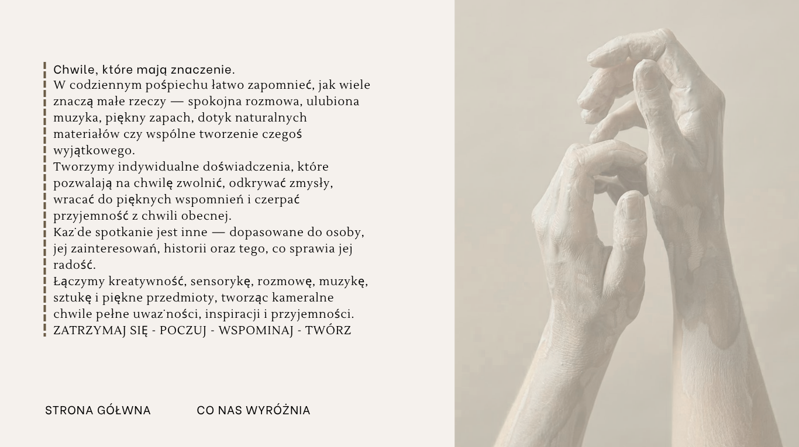

Oferta indywidualna
Wybór doświadczeń
Każde doświadczenie dopasowujemy do osoby — jej zainteresowań, wspomnień i tego, co sprawia jej radość.
W codziennym pośpiechu łatwo zapomnieć, jak wiele znaczą małe rzeczy — spokojna rozmowa, ulubiona muzyka, piękny zapach, dotyk naturalnych materiałów czy wspólne tworzenie czegoś wyjątkowego.
Tworzymy indywidualne doświadczenia, które pozwalają na chwilę zwolnić, odkrywać zmysły, wracać do pięknych wspomnień i czerpać przyjemność z chwili obecnej.
Każde spotkanie jest inne — dopasowane do osoby, jej zainteresowań, historii oraz tego, co sprawia jej radość.
Łączymy kreatywność, sensorykę, rozmowę, muzykę, sztukę i piękne przedmioty, tworząc kameralne chwile pełne uważności, inspiracji i przyjemności.

Nasze spotkania powstały z myślą o tym, aby zwykły czas zamienić w wyjątkowe doświadczenie. Wyróżnia nas młoda energia i świeże spojrzenie na spędzanie czasu.
Każde spotkanie prowadzimy z uważnością, spokojem i cierpliwością, dopasowując jego przebieg do osoby, jej nastroju, zainteresowań i możliwości.
Zioła, przyprawy, suszone owoce, naturalne materiały czy elementy do tworzenia są starannie przygotowane i pięknie zapakowane — w eleganckich słoiczkach, pudełkach i pojemnikach.
Całość dopełnia estetyczna oprawa, muzyka, delikatne światło i zapach. Chcemy, aby już samo przygotowanie spotkania było małą przyjemnością dla zmysłów.
To nie jest zwykła opieka ani tradycyjne zajęcia. To starannie przygotowany czas, w którym liczy się człowiek, atmosfera i każdy detal. Bo wierzymy, że troska o drugą osobę może być piękna, elegancka i pełna małych przyjemności.
Każde doświadczenie dopasowujemy do osoby — jej zainteresowań, wspomnień i tego, co sprawia jej radość.
Podczas spotkania poznasz aromat ziół, kwiatów i przypraw. Odkryjesz różnorodne faktury, a następnie stworzysz własną kompozycję z wybranych elementów.
Każdy kolor, zapach i faktura może stać się impulsem do koncentracji, aktywnego poznawania, pracy dłoni oraz przywoływania skojarzeń i wspomnień.
Całe doświadczenie opiera się na swobodnej, uważnej rozmowie. Pytania, skojarzenia i historie tworzą przestrzeń do przywoływania wspomnień, ćwiczenia pamięci i aktywnego angażowania się w rozmowę.
Podczas spotkania poznasz różne herbaty, ich aromaty i historie. Odkryjesz pudełko rozgrzewających przypraw, a także spróbujesz wybranych suszonych owoców.
Na zakończenie stworzysz własną mieszankę herbacianą, dobierając składniki zgodnie z własnymi upodobaniami.
Każdy smak i zapach staje się początkiem swobodnej rozmowy i osobistych skojarzeń. Wspólne odkrywanie aromatów może przywoływać wspomnienia, pobudzać pamięć i zachęcać do aktywnego udziału w rozmowie.
Cała aktywność odbywa się w klimacie świec, muzyki wedle uznania i relaksacyjnych zapachów.

Delikatne światło świec, subtelny zapach naturalnych olejków i spokojna muzyka tworzą wyjątkową atmosferę.
Wśród świeżych i suszonych kwiatów, ziół oraz naturalnych dodatków skomponujesz własny, niepowtarzalny bukiet.
Podczas tworzenia towarzyszyć Ci będzie swobodna rozmowa, w tym o skojarzeniach i wspomnieniach — co pomaga w ćwiczeniu pamięci i zachęca do aktywnego udziału.

Wyjątkowe spotkanie, które łączy twórczą ekspresję z różnorodnymi doświadczeniami dla dłoni.
Podczas każdego spotkania odkryjesz inną formę tworzenia — od komponowania bransoletek i biżuterii, przez malowanie i prace artystyczne, aż po lepienie i ugniatanie mas plastycznych czy tworzenie obrazów dłońmi.
Różnorodne faktury, kształty i materiały angażują zmysł dotyku, wspierają sprawność dłoni, koncentrację i koordynację, a jednocześnie dają przestrzeń do swobodnego wyrażania siebie.
Tworzeniu towarzyszy spokojna rozmowa i przyjemna atmosfera — to okazja do aktywnego spędzenia czasu, rozwijania kreatywności, pobudzania zmysłów i czerpania radości z samego procesu tworzenia.
Spokojne, indywidualnie dopasowane spotkanie poświęcone dłoniom i zmysłom.
Delikatny masaż dłoni, ciepłe kompresy, pachnące olejki, relaksująca muzyka, blask świec i subtelne aromaty tworzą przyjemną atmosferę sprzyjającą odprężeniu.
Ciepło, dotyk i różnorodne aromaty tworzą delikatne doświadczenia sensoryczne, które angażują zmysł dotyku i węchu, wspierają wyciszenie oraz pozwalają skupić uwagę na własnych odczuciach.
Indywidualne spotkanie skupione na codziennych czynnościach, pracy dłoni i samodzielności. Zamiast typowej zabawy proponujemy proste aktywności, dopasowane do możliwości i zainteresowań danej osoby.
Rysowanie szlaczków, kolorowanie, nawlekanie, przekładanie drobnych elementów, układanie, lepienie, zapinanie guzików czy ćwiczenie chwytu — wszystko może stać się naturalną częścią wspólnie spędzonego czasu.
Aktywności dobieramy tak, aby angażować dłonie, palce, koordynację i koncentrację, a jednocześnie pozostawać przyjemne i nieskomplikowane — we własnym tempie, z uwzględnieniem możliwości uczestnika.
Nasze spotkania odbywają się w kameralnych grupach, dzięki czemu każde z nich ma spokojny, bardziej osobisty charakter.
Dbamy o odpowiednią oprawę całego doświadczenia — od przygotowania przestrzeni i materiałów, przez muzykę, światło i zapach, aż po sam przebieg spotkania. Naturalne materiały, kwiaty, świece, subtelne aromaty i starannie przygotowany stół sprawiają, że już od pierwszych chwil czuć, że to coś więcej niż zwykłe zajęcia.
Każde spotkanie ma swój temat i charakter. Może być spokojne i wyciszające, pełne kreatywnego tworzenia bądź skoncentrowane na zapachach, smakach, muzyce czy kontakcie z naturą. Program przygotowujemy tak, aby grupa mogła nie tylko uczestniczyć, ale przede wszystkim spędzić ze sobą czas.
Dla rodziców, którzy potrzebują chwili dla siebie, ale chcą, aby ich dziecko spędziło ten czas aktywnie i wartościowo — pełne odkrywania i zabawy, dostosowane do wieku dziecka.
Podczas spotkania dziecko poznaje świat zapachów, faktur, kolorów i kształtów. Wśród ziół, kwiatów, liści i naturalnych materiałów odkrywa różnorodne elementy, dotyka ich, porównuje i nazywa swoje skojarzenia.
Dziecko tworzy własną kompozycję z wybranych roślin i dodatków, ucząc się poprzez swobodne eksperymentowanie. Każdy element może stać się początkiem rozmowy, opowieści lub małego odkrycia.
Różnorodne faktury i zapachy rozwijają ciekawość, koncentrację i wyobraźnię, a samo tworzenie daje przestrzeń do samodzielnego podejmowania decyzji.

Zapraszamy do świata małych eksperymentów, w którym dziecko może dotykać, przelewać, przesypywać, mieszać i obserwować.
Wykorzystujemy bezpieczne materiały o różnorodnych strukturach — piasek, ryż, kasze, wodę, naturalne elementy czy masy plastyczne. Dziecko samodzielnie sprawdza, jak zachowują się poszczególne materiały i co można z nich stworzyć.
Nie ma jednej właściwej drogi — najważniejsze jest samodzielne odkrywanie i możliwość eksperymentowania we własnym tempie.
Spotkanie, podczas którego kolory stają się sposobem na twórcze wyrażanie siebie. Dziecko poznaje różne techniki malowania — pędzlami, gąbkami, dłońmi czy przedmiotami o nietypowych kształtach.
Może mieszać kolory, tworzyć własne wzory i swobodnie eksperymentować z materiałami. Rozmowie o kolorach towarzyszą pytania o to, z czym kojarzy się dany kolor, jakie przywołuje obrazy i jakie może wywoływać odczucia.
To doświadczenie łączy kontakt z fakturą, kolorem i ruchem z kreatywną zabawą oraz swobodnym wyrażaniem własnych pomysłów.
Każde doświadczenie możemy dopasować do osoby, jej potrzeb, zainteresowań i możliwości.
Dla tych, którzy chcą pozostać aktywni, rozwijać zainteresowania, pobudzać zmysły, ćwiczyć pamięć i sprawność dłoni, a przede wszystkim mieć przestrzeń na rozmowę i kontakt z drugim człowiekiem. Ciekawa alternatywa dla tradycyjnej opieki — przychodzimy z pomysłem na konkretną aktywność: wspólne tworzenie, zapachy i smaki, muzyka, wspomnienia. To także propozycja dla osób samotnych, które chciałyby wypełnić czas czymś przyjemnym i angażującym.
Dla osób, które chcą spotkać się, odprężyć i zrobić coś razem. Organizujemy kameralne spotkania, podczas których można poznać nowych ludzi, rozwijać zainteresowania i spędzić czas w przyjemnej atmosferze. Możemy również przygotować indywidualny scenariusz — od kreatywnych doświadczeń po wieczory pełne smaków, zapachów, muzyki i wspomnień.
Nie każde spotkanie musi być częścią regularnej oferty. Stworzymy spersonalizowane doświadczenie z okazji urodzin, imienin, rocznicy czy wspólnego spotkania przyjaciółek. Dobieramy temat, aktywności, muzykę, zapachy i całą oprawę do okazji i osób, które będą w niej uczestniczyć.
Dla rodziców, którzy potrzebują chwili dla siebie, ale chcą, aby dziecko spędziło ten czas aktywnie i wartościowo. Zamiast tradycyjnej opieki proponujemy spotkanie pełne odkrywania i zabawy — dostosowane do wieku. Przez zabawy sensoryczne, tworzenie, rozmowę, muzykę i poznawanie świata rozwijamy ciekawość, kreatywność, samodzielność oraz umiejętność nazywania emocji.
+ dojazd w zależności od odległości:
do 10 km — w cenie · 10–20 km — +20 zł · 20–30 km — +40 zł
75 min
75 min